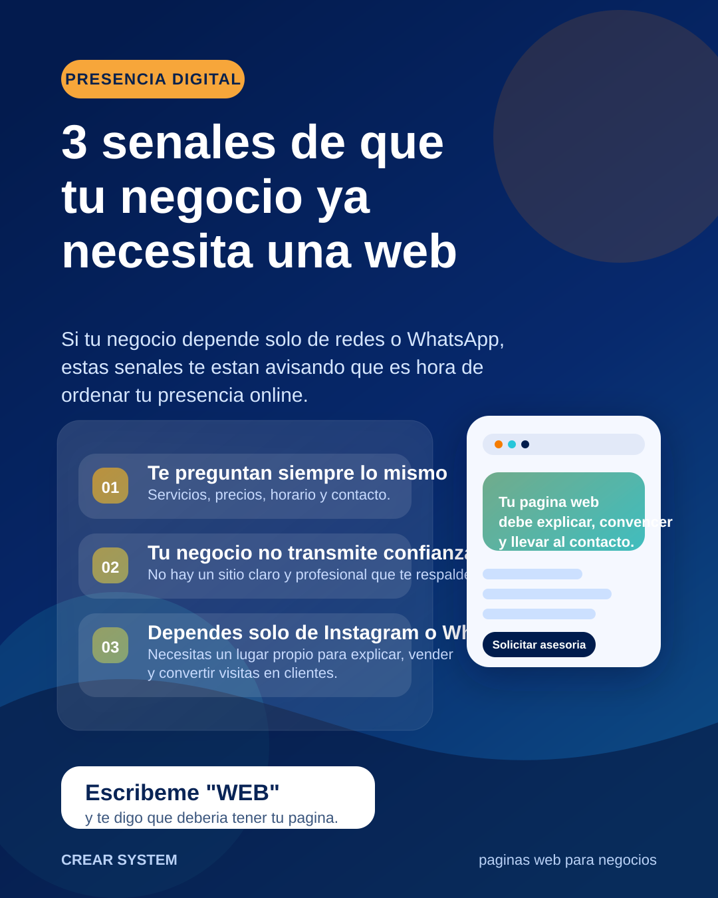
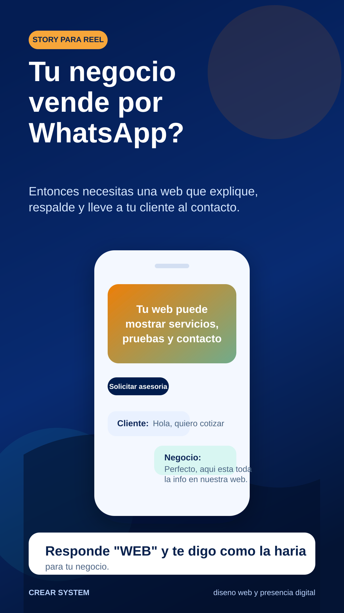

Ejemplos visuales listos para vender paginas web
Estas piezas se hicieron con el color y tono de Crear System para que puedas usarlas como base en Instagram, Facebook o LinkedIn. Puedes abrir este archivo en el navegador y editar los SVG en Canva, Figma o Illustrator si quieres sacar mas versiones.
